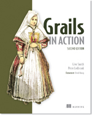
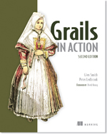

Grails
É um framework Java
mas é limpinho :)
O que vem na caixa
Framework Web MVC (RoR, CodeIgniter, Django, Play!)
Convention-Over-Configuration
Full-Stack
Pontos fortes
O ciclo de desenvolvimento é rápido
Grande variedade de plugins disponíveis
Aplicar alterações em configurações e fontes não depende de reiniciar o servidor
Excelente documentação (e muitos livros)
É uma linguagem:
- Inspirada em linguagens como Python, Ruby e Smalltalk
- Que roda sobre a JVM
- Extende as funcionalidades do Java
- Dinâmica (type-checking E metaprogramming)
- Permite checagem de tipos estática
Integração de mão dupla com Java out-of-the-box
Permite o uso de bibliotecas e código Java

Código fonte Groovy compila para bytecode Java
Features
Closures
def quadrado = {it**2} // parâmetro implícito
println quadrado(5) // retorna 25
def soma = { a, b -> a+b }
println soma(4, 10) // retorna 14
Groovy Truth
Regra: tudo que não for nulo, vazio, zero (ou explicitamente FALSE, óbvio), será avaliado para TRUE
// True | // False
def a = true | def b = false
def numbers_full = [1,2,3] | def numbers = []
def s = 'abc' | def s = ''
def n = 1 | def n = 0
def obj = new Object() | def obj = null
Elvis Operator
Forma reduzida do operador ternário
a ?: b
equivalente à
a != null ? a : b

GStrings
// Múltiplas linhas
"""
Este é um
texto muito
longo
"""
// Interpolação de variáveis e expressões
"1 + 1 = ${1+1}"
// Expressões regulares
"12345 world!".replaceAll(/\d+/, 'Hello')
Collections
// Estruturas nativas para manipulação de coleções
def list = [5, 6, 7, 8]
def range = 5..8
def map = [cidade:"Porto Alegre",
estado:"RS",
pais:"Brasil",
cep:90000001]
map.get("cidade") // "Porto Alegre"
Traits e Mixins
trait FlyingAbility { String fly() { "I'm flying!" } }
trait WalkAbility { String walk() { "I'm walking!" } }
class Thing implements FlyingAbility { }
def a = new Thing()
assert a.fly() == "I'm flying!"
class Thing { }
def b = new Thing() as FlyingAbility
assert b.fly() == "I'm flying!"
def c = new Thing()
def d = c.withTraits FlyingAbility, WalkAbility
d.fly(); d.walk()
@Mixins estão deprecated a partir da versão 2.3, em favor dos Traits.
Baby steps - do Java ao Groovy
Fonte: chrisdail.com


Grails
Criando uma aplicação Grails
// Cria a aplicação
~ grails create-app MinhaApp
// Executa a aplicação
~ cd MinhaApp
~ grails run-app MinhaApp
//// Convention-over-configuration
|- grails-app
|--- assets // Conteúdo gerenciado pelo Asset Plugin
|--- conf // Arquivos de configuração
|--- controllers
|--- domain
|--- i18n // Internacionalização
|--- services
|--- taglib
|--- utils
|--- views // Telas, templates
|- src
|--- groovy
|--- java
|- test // Testes unitários
|- web-app // Imagens, CSS, JS, HTML ...
Views
- GSP (HTML mesclado com taglibs próprias e/ou do framework)
- Conceito de templates
- Permite scripts em Groovy
- Taglibs são muito simples
- Scaffolding

Scaffolding
// Scaffolding dinâmico, gera as GUIs para CRUD
// em tempo de execução:
// index, show, edit, delete, create, save, update
class BookController { | class AnotherController {
static scaffold = true | static scaffold = Book
} | }
// Scaffolding estático: cria fisicamente os arquivos das
// interfaces CRUD, de acordo com o template padrão
~ grails generate-views [domain-class-name]
~ grails generate-all [domain-class-name]
// Customizar os templates:
~ grails install-templates

// Exemplo de uso:
${flash.message}
Assets pipeline *
- Otimização e organização do uso de recursos estáticos nas páginas.
- Atualização on-the-fly, alterações são disponibilizadas sem reload.
- Redução do tamanho das depenências, através da compressão, minificação e cache (UglifyJS).
- Dependências e ordem de carga são configuráveis diretamente nos CSS e JS.
- Suporte à compilação de recursos estáticos LESS, SASS/SCSS, Handlebars, Ember, CoffeScript.
* na versão 2.4 substituiu o plugin Resources
Controllers
// Gera um controller para CRUD (template pré-definido)
~ grails generate-controller [domain-class-name]
// Ou pode ser criado diretamente
package org.sample
class SampleController {
def world() {
render "Hello World!"
}
}
// Por convenção, o mapeamento para as
// seguintes URL e view será:
Requisição -> [grails-app]/sample/world
Retorno -> [grails-app]/views/sample/world.gsp
Escopos
- servletContext -> compartilha entre toda a aplicação
- session -> apenas na sessão do usuário
- request -> objetos referentes à requisição corrente
- params -> mapa contendo os parâmetros passados no request
- flash -> temporário, mantém o conteúdo apenas até o próximo request
class SomeController {
def find() {
def findBy = params["findBy"]
def appContext = request["foo"]
def loggedUser = session["logged_user"]
}
}
UrlMappings
- A convenção é
/controller/action/id - Pode ser alterada em
[grails-app]/conf/UrlMappings.groovy - Permite agrupar ações que compartilham caminhos
- É possível redirecionar para URI
- Mapeamento REST para controllers por convenção ( a partir da 2.3)
Ou seja, o difícil não é fácil
- Atualizar a versão do framework pode ser uma dor de cabeça.
- O framework decide muita coisa por você.
- IDEs às vezes mais atrapalham que ajudam.
- Dilema do Homem-Aranha.
- Grails ainda é focado apenas em servlet containers.(suporte ao Netty está previsto na v3.0)
- É
obrigatórioextremamente indicado aprender Groovy, GORM, Gradle e GVM.
Referências

 

Fim
Uilian Souza
uilian.com / uilian@gmail.com / @uilian
Vocês conseguiram achar o Geninho na apresentação?
Demo
/*
.-.
| |
| | .-.
| |-._| |
|_| | | |
/ )|_|_|-|
| | `-^-^ |
| || |
\ ' /
| |
| |
*/